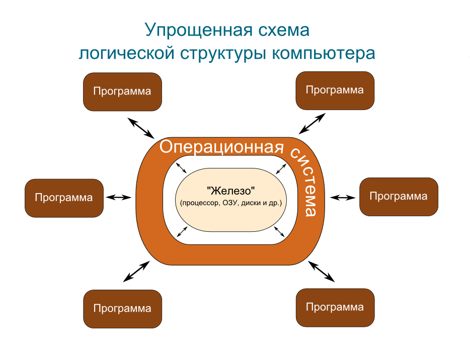

Операционная система (ОС) - это системное программное обеспечение, которое управляет компьютерным оборудованием, ресурсами программного обеспечения и предоставляет общие услуги для компьютерных программ.
Операционные системы с разделением времени планируют задачи для эффективного использования системы и могут также включать бухгалтерское программное обеспечение для распределения затрат на процессорное время, запоминающее устройство большой емкости, печать и другие ресурсы.
Для аппаратных функций, таких как ввод и вывод и выделение памяти, операционная система действует как посредник между программами и компьютерным оборудованием, хотя код приложения обычно выполняется непосредственно оборудованием и часто выполняет системные вызовы для функционирования ОС или прерывается ею. Операционные системы можно найти на многих устройствах, являющимися компьютерами - от мобильных телефонов и игровых консолей до веб-серверов и суперкомпьютеров.
Доминирующей операционной системой для настольных ПК является Microsoft Windows с долей рынка около 76,45%. mac OS от Apple Inc. занимает второе место (17,72%), а разновидности Linux в совокупности занимают третье место (1,73%). В мобильном секторе (включая смартфоны и планшеты) доля Android вырастет до 72% в 2020 году. Согласно данным за третий квартал 2016 года, доля Android на смартфонах преобладает - 87,5 процента с также темпом роста 10,3 процента в год, за которым следует iOS от Apple с 12,1 процента с ежегодным уменьшением доли рынка на 5,2 процента, в то время как доля других операционных систем до всего 0,3 процента. Дистрибутивы Linux доминируют в серверном и суперкомпьютерном секторах. Для многих приложений существуют другие специализированные классы операционных систем, такие как встроенные системы и системы реального времени.
Содержание
Предшественником операционных систем следует считать служебные программы (загрузчики и мониторы), а также библиотеки часто используемых подпрограмм, начавшие разрабатываться с появлением универсальных компьютеров 1-го поколения (конец 1940-х годов). Служебные программы минимизировали физические манипуляции оператора с оборудованием, а библиотеки позволяли избежать многократного программирования одних и тех же действий (осуществления операций ввода-вывода, вычисления математических функций и т. п.).
В 1950—1960-х годах сформировались и были реализованы основные идеи, определяющие функциональность ОС: пакетный режим, разделение времени и многозадачность, разделение полномочий, реальный масштаб времени, файловые структуры и файловые системы.
- Исполнение запросов программ (ввод и вывод данных, запуск и остановка других программ, выделение и освобождение дополнительной памяти и др.)
- Загрузка программ в оперативную память и их выполнение
- Стандартизованный доступ к периферийным устройствам (устройства ввода-вывода)
- Управление оперативной памятью (распределение между процессами, организация виртуальной памяти)
- Управление доступом к данным на энергонезависимых носителях (таких как жёсткий диск, оптические диски и др.), организованным в той или иной файловой системе
- Обеспечение пользовательского интерфейса
- Сохранение информации об ошибках системы
- Параллельное или псевдопараллельное выполнение задач (многозадачность)
- Эффективное распределение ресурсов вычислительной системы между процессами
- Разграничение доступа различных процессов к ресурсам
- Организация надёжных вычислений (невозможности одного вычислительного процесса намеренно или по ошибке повлиять на вычисления в другом процессе), основана на разграничении доступа к ресурсам
- Взаимодействие между процессами: обмен данными, взаимная синхронизация.
- Защита самой системы, а также пользовательских данных и программ от действий пользователей (злонамеренных или по незнанию) или приложений
- Многопользовательский режим работы и разграничение прав доступа
Необходимость оптимального использования дорогостоящих вычислительных ресурсов привела к появлению концепции «пакетного режима» исполнения программ. Пакетный режим предполагает наличие очереди программ на исполнение, причём система может обеспечивать загрузку программы с внешних носителей данных в оперативную память, не дожидаясь завершения исполнения предыдущей программы, что позволяет избежать простоя процессора.
Разделение времени и многозадачностьУже пакетный режим в своём развитом варианте требует разделения процессорного времени между выполнением нескольких программ.
Необходимость в разделении времени (многозадачности, мультипрограммировании) проявилась ещё сильнее при распространении в качестве устройств ввода-вывода телетайпов (а позднее, терминалов с электронно-лучевыми дисплеями) (1960-е годы). Поскольку скорость клавиатурного ввода (и даже чтения с экрана) данных оператором много ниже, чем скорость обработки этих данных компьютером, использование компьютера в «монопольном» режиме (с одним оператором) могло привести к простою дорогостоящих вычислительных ресурсов.
Разделение времени позволило создать «многопользовательские» системы, в которых один (как правило) центральный процессор и блок оперативной памяти соединялся с многочисленными терминалами. При этом часть задач (таких как ввод или редактирование данных оператором) могла исполняться в режиме диалога, а другие задачи (такие как массивные вычисления) — в пакетном режиме.
Распространение многопользовательских систем потребовало решения задачи разделения полномочий, позволяющей избежать возможности изменения исполняемой программы или данных одной программы в памяти компьютера другой программой (намеренно или по ошибке), а также изменения самой системы прикладной программой.
Реализация разделения полномочий в операционных системах была поддержана разработчиками процессоров, предложивших архитектуры с двумя режимами работы процессора — «реальным» (в котором исполняемой программе доступно всё адресное пространство компьютера) и «защищённым» (в котором доступность адресного пространства ограничена диапазоном, выделенным при запуске программы на исполнение).
Применение универсальных компьютеров для управления производственными процессами потребовало реализации «масштаба реального времени» («реального времени») — синхронизации исполнения программ с внешними физическими процессами.
Включение функции масштаба реального времени позволило создавать решения, одновременно обслуживающие производственные процессы и решающие другие задачи (в пакетном режиме и/или в режиме разделения времени).
Экран первой операционной системы
Существуют две группы определений операционной системы: «набор программ, управляющих оборудованием» и «набор программ, управляющих другими программами». Обе они имеют свой точный технический смысл, который связан с вопросом, в каких случаях требуется операционная система.
Есть приложения вычислительной техники, для которых операционные системы излишни. Например, встроенные микрокомпьютеры, содержащиеся во многих бытовых приборах, автомобилях (иногда по десятку в каждом), простейших сотовых телефонах, постоянно исполняют лишь одну программу, запускающуюся по включении. Многие простые игровые приставки — также представляющие собой специализированные микрокомпьютеры — могут обходиться без операционной системы, запуская при включении программу, записанную на вставленном в устройство «картридже» или компакт-диске.
- Если нужен универсальный механизм сохранения данных
- Для предоставления системным библиотекам часто используемых подпрограмм.
- Для распределения полномочий
- Необходима возможность имитации «одновременного» исполнения нескольких программ на одном компьютере
- Для управления процессами выполнения отдельных программ
Таким образом, современные универсальные операционные системы можно охарактеризовать, прежде всего, как:
- Использующие файловые системы (с универсальным механизмом доступа к данным)
- Многопользовательские (с разделением полномочий)
- Многозадачные (с разделением времени)
Многозадачность и распределение полномочий требуют определённой иерархии привилегий компонентов в самой операционной системе. В составе операционной системы различают три группы компонентов:
- Ядро, содержащее планировщик; драйверы устройств, непосредственно управляющие оборудованием; сетевая подсистема, файловая система
- Системные библиотеки
- Оболочка с утилитами
Большинство программ, как системных (входящих в операционную систему), так и прикладных, исполняются в непривилегированном («пользовательском») режиме работы процессора и получают доступ к оборудованию (и, при необходимости, к другим ресурсам ядра, а также ресурсам иных программ) только посредством системных вызовов. Ядро исполняется в привилегированном режиме: именно в этом смысле говорят, что система (точнее, её ядро) управляет оборудованием.
В определении состава операционной системы значение имеет критерий операциональной целостности (замкнутости): система должна позволять полноценно использовать (включая модификацию) свои компоненты. Поэтому в полный состав операционной системы включают и набор инструментальных средств (от текстовых редакторов до компиляторов, отладчиков и компоновщиков).
Ядро — центральная часть операционной системы, управляющая выполнением процессов, ресурсами вычислительной системы и предоставляющая процессам координированный доступ к этим ресурсам. Основными ресурсами являются процессорное время, память и устройства ввода-вывода. Доступ к файловой системе и сетевое взаимодействие также могут быть реализованы на уровне ядра.
Как основополагающий элемент операционной системы, ядро представляет собой наиболее низкий уровень абстракции для доступа приложений к ресурсам вычислительной системы, необходимым для их работы. Как правило, ядро предоставляет такой доступ исполняемым процессам соответствующих приложений за счёт использования механизмов межпроцессного взаимодействия и обращения приложений к системным вызовам ОС.
Описанная задача может различаться в зависимости от типа архитектуры ядра и способа её реализации.
- Процессы
- Файлы
- События
- Потоки
- Семафоры
- Мьютексы
- Каналы
- Файлы, проецируемые в память